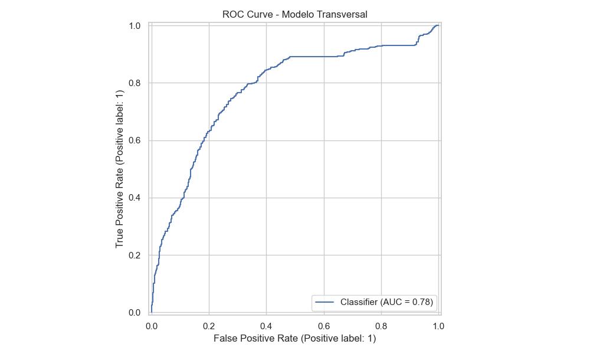
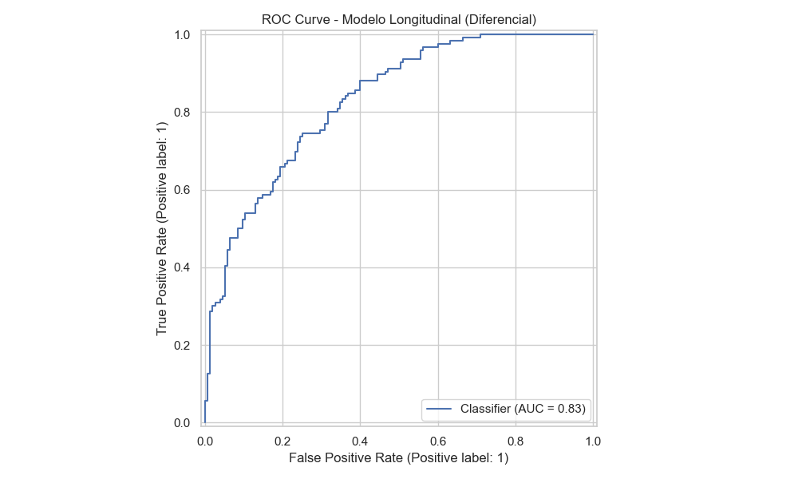
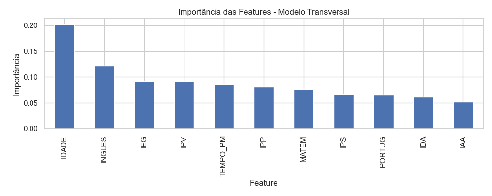

Inteligência e Modelagem Preditiva
Inteligência e Modelagem Preditiva
Nesta seção, detalhamos a construção dos modelos de Inteligência Artificial baseados no algoritmo XGBoost (Extreme Gradient Boosting), treinados para atuar na prevenção da defasagem escolar.
Estratégia de Modelagem
Para uma cobertura completa do problema, não desenvolvemos apenas um modelo, mas uma estratégia dual que atende a diferentes necessidades da ONG:
-
Modelo Transversal
Foco: Diagnóstico do "Hoje". Identifica alunos que apresentam sinais de defasagem no ano letivo atual para intervenção imediata.
-
Modelo Longitudinal
Foco: Predição do "Amanhã". Utiliza o comportamento histórico (ano \(t\)) para prever o risco de defasagem no próximo ano (\(t+1\)).
Performance e Resultados
Utilizamos o XGBoost pela sua alta performance em dados tabulares e capacidade de lidar com dados faltantes (comum em cadastros de ONGs).
Objetivo: Identificação Imediata
O modelo foi calibrado para maximizar o Recall, garantindo que a ONG não deixe nenhum aluno em risco passar despercebido.

Métricas de Validação (Base 2024):
| Métrica | Resultado | Status |
|---|---|---|
| ROC AUC | 0.77 | Bom |
| Precisão (Classe 1) | 64% | Moderado |
| Recall (Classe 1) | 85% | Excelente |
Diferencial Técnico
Este modelo alcançou uma performance superior ao transversal, demonstrando que o histórico acadêmico é um preditor poderosíssimo para o futuro.

Métricas de Validação (Pares t -> t+1):
| Métrica | Resultado | Status |
|---|---|---|
| ROC AUC | 0.83 | Excelente |
| Acurácia Geral | 74% | Sólido |
O que define o Risco? (Drivers)
Entender o "porquê" da decisão do modelo é fundamental para a confiança pedagógica. Abaixo, os indicadores que mais pesam na decisão matemática da IA:
Importância das Variáveis (Feature Importance)
 Drivers do Modelo Transversal: Foco em índices acadêmicos e idade.
 Drivers do Modelo Longitudinal: Foco em tendências e tempo de casa.
Drivers do Modelo Longitudinal: Foco em tendências e tempo de casa.
Interpretação para a ONG
Note que o IPS (Índice Psicossocial) e o IEG (Engajamento) aparecem consistentemente no topo. Isso confirma a tese de que o bem-estar emocional e a presença ativa são os maiores protetores contra a defasagem.
Considerações de Deploy
Os modelos foram exportados utilizando a biblioteca joblib e estão integrados à aplicação Streamlit, permitindo:
1. Inferência em tempo real para novos alunos.
2. Análise de "What-if" (O que acontece com o risco se aumentarmos o engajamento deste aluno?).
 Próximo Passo: Veja como operar estas predições no Guia do Usuário
Próximo Passo: Veja como operar estas predições no Guia do Usuário